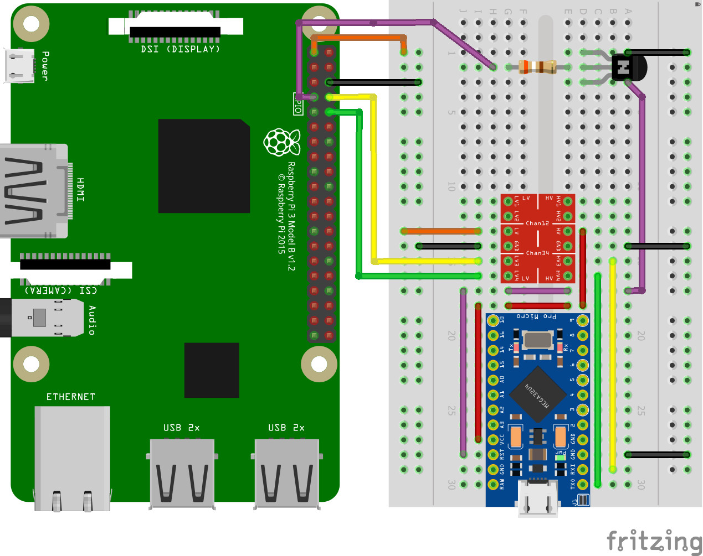
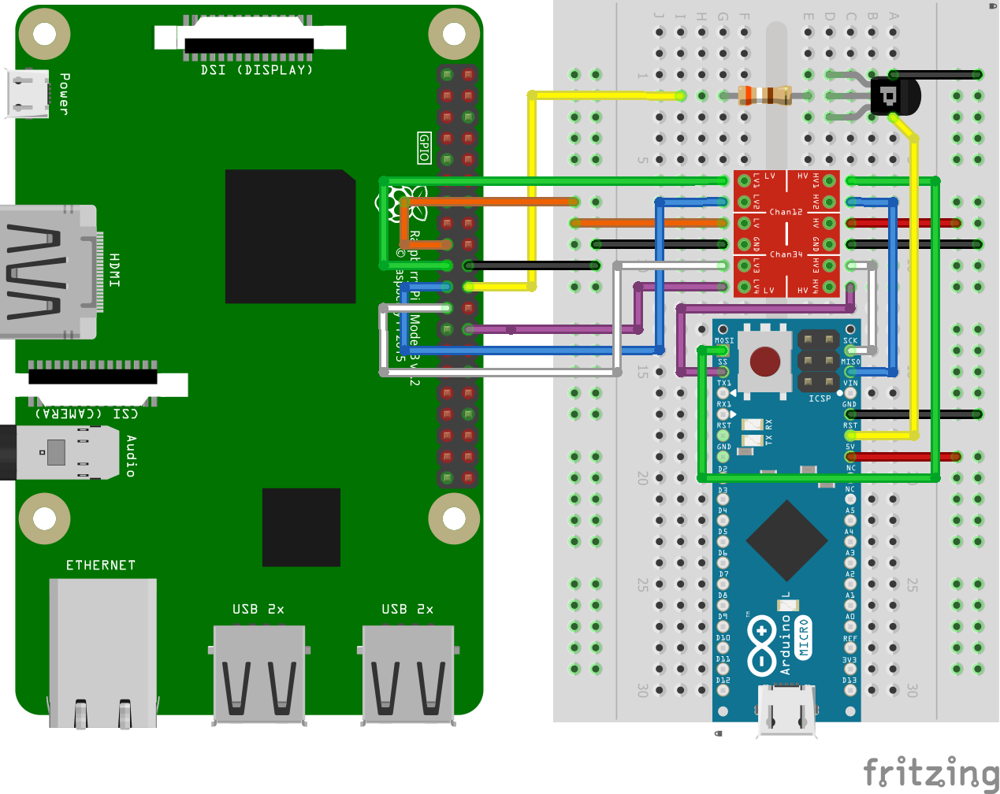

Using Arduino HID on non-v0 platform¶
This is useful if you need a simple and primitive keyboard/mouse emulator device. For example when used with a hardware KVM switch which does not recognize composite HID. You can also use the Arduino HID to emulate the PS/2 keyboard.
Serial HID¶
PiKVM v3 HAT note
Don't use it, use SPI HID for v3. Otherwise, you won't be able to use the Serial console.
USB keyboard and mouse¶
-
Get some parts
- Arduino Pro Micro (based on an ATMega32u4).
- Logic level shifter.
- 1x NPN transistor (almost any NPN transistor: 2n2222 or similar).
- 1x 390 Ohm resistor.
- A breadboard and wires.
-
Build the Arduino HID according to the scheme

-
Power up PiKVM and switch it to RW-mode using command
rw. -
Add these lines to
/etc/kvmd/override.yaml:kvmd: hid: type: serial reset_pin: 4 device: /dev/kvmd-hid -
Create file
/etc/udev/rules.d/99-kvmd-extra.rules:KERNEL=="ttyAMA0", SYMLINK+="kvmd-hid" -
Run
systemctl disable getty@ttyAMA0.service. -
Remove
console=ttyAMA0,115200orconsole=serial0,115200andkgdboc=ttyAMA0,115200orkgdboc=serial0,115200from/boot/cmdline.txt. -
Perform
reboot.
PS/2 keyboard¶
Using the PS/2 firmware currently have some limitations:
- The possibility of using the switchable USB HID is excluded.
- PS/2 mouse is not supported right now (but it will).
Both of these problems will be solved in the nearest future and the two different firmware versions will be combined into one universal one.
To select the PS/2 firmware, follow the instructions for the USB, but with one exception:
Before make you will need to edit file platformio.ini
Open the file and find these lines:
[_common]
build_flags =
-DHID_PS2_KBD_CLOCK_PIN=7
-DHID_PS2_KBD_DATA_PIN=5
-DHID_USB_CHECK_ENDPOINT
# ----- The default config with dynamic switching -----
-DHID_DYNAMIC
-DHID_WITH_USB
-DHID_SET_USB_KBD
-DHID_SET_USB_MOUSE_ABS
# ----- PS2 keyboard only -----
# -DHID_WITH_PS2
# -DHID_SET_PS2_KBD
# ----- PS2 keyboard + USB absolute mouse -----
# -DHID_WITH_USB
# -DHID_WITH_PS2
# -DHID_SET_PS2_KBD
# -DHID_SET_USB_MOUSE_ABS
# ----- PS2 keyboard + USB relative mouse -----
# -DHID_WITH_USB
# -DHID_WITH_PS2
# -DHID_SET_PS2_KBD
# -DHID_SET_USB_MOUSE_REL
By default, the firmware works with USB HID and supports dynamic mode switching. You can choose one of the other modes by commenting some lines and uncommenting others. This example to use a USB mouse and PS/2 keyboard:
...
# ----- The default config with dynamic switching -----
# -DHID_DYNAMIC
# -DHID_WITH_USB
# -DHID_SET_USB_KBD
# -DHID_SET_USB_MOUSE_ABS
# ----- PS2 keyboard only -----
...
# ----- PS2 keyboard + USB absolute mouse -----
-DHID_WITH_USB
-DHID_WITH_PS2
-DHID_SET_PS2_KBD
-DHID_SET_USB_MOUSE_ABS
# ----- PS2 keyboard + USB relative mouse -----
...
Next, connect Arduino pins to the female PS/2 port of your motherboard. Choose the purple port. If your motherboard only have one port, it's probably universal and can be used either for the keyboard or for the mouse. Most likely, it is painted in two colors: green and purple. You can use it either.
Follow the diagram
| Female PS/2 port (front view) | Pinout |
|---|---|
 |
Arduino pin 7 <-> PS/2 CLOCK Arduino pin 5 <-> PS/2 DATA Arduino GND pin <-> PS/2 GND |
Warning
Connect VIN pin of Arduino to any Raspberry's 5v pin for PS/2 only device. But you don't need to connect the Arduino VIN pin if you connected USB (Arduino will get power through it).
SPI HID¶
Using an SPI connection, an Arduino Micro (not Pro) or compatible can be flashed from the Pi and used as an HID keyboard and mouse. Unlike UART, SPI does not share pins with Bluetooth on the Raspberry Pi so the Bluetooth radio does not need to be disabled.

Before powering either device, double-check the connections. The following should be wired from the Pi to either the level shifter or the Arduino. While the Arduino tolerates 3.3V logic input, 5V outputs from the Arduino can damage or destroy the Raspberry Pi and must not be connected directly to 3.3V GPIO pins directly.
Parts list¶
There are very few parts needed besides the Raspberry Pi to build the solution. Some parts may be purchased with or without headers, if headers are not pre-soldered, it may be necessary to order some breakaway header strips and solder them to the boards prior to assembly unless the wires will be soldered directly to the boards.
- Raspberry Pi Zero W or Pi 4 are the most popular boards for this solution, pre-soldered headers recommended
- Arduino Micro (or compatible) microcontroller board with pre-soldered headers recommended
- Logic Level Converter. This may be RX/TX, Bidirectional, or Single Supply
- Dupont wires (female to male pin) recommended for breadboard or other suitable means of making the connections
- Optional: Breakaway headers for the logic level converter
- Optional: Breadboard large enough to accomodate the parts
- Optional: Header pins for connection to a breadboard
Note
A smaller "Pro Micro" board is available in a 3.3V model but the SS connection (RX_LED) is not available as a separate pin or solderable hole. If using this board, a jumper wire can be soldered to the resistor for the RX_LED but there is risk of burning the resistor, the LED, the board, or other components in the process. Advantages of this board include not requiring a logic level converter and reduced breadboard or board space for building the solution.
List of connections to be made¶
For the primary functionality, most connections are made using a 4-channel bidirectional level shifter
- Pi 3v3 to LV on the level shifter
- Pi Ground to LV GND
- Arduino GND to HV GND
- GPIO10 (MOSI) via the level shifter to MOSI on the Arduino
- GPIO9 (MISO) via the level shifter to MISO on the Arduino
- GPIO11 (SPIO_SCLK) via the level shifter to SCK on the Arduino
- GPIO7 (SPIO_CE1_N) via the level shifter to SS (or RX_LED) on the Arduino
An additional circuit is used with a transistor to reset the HID for mode changes and for SPI programming as follows:
- GPIO25 to PNP base on transistor
- PNP emitter to ground
- PNP collector to RST on the Arduino
Pictures of this setup are also available in full resolution for download to assist for both the Raspberry Pi and the Arduino board. A smaller version of the images has been included on this page and can be downloaded.
| Raspberry Pi Closeup | Breadboard with Arduino |
|---|---|
 |
 |
Programming assumes the Arduino is powered via USB, either from the connected host or the Pi itself. If the USB is not connected, 5 V may be provided by the Raspberry Pi GPIO but should be disconnected prior to connecting USB to the Arduino's USB port. The Raspberry Pi does not have backcurrent protection, a circuit using one or more Schottky diodes can be built to OR power from multiple sources but it's easier and more cost effective to avoid conflict and voltage differences between power supplies by leaving the 5 V wire disconnected.
Preparing the installation for SPI devices and programming¶
As of the latest package release, the kdmd service supports SPI. It should be sufficient to ensure the packages are up-to-date with the latest release, the programmer is installed, and the SPI device overlay is loaded at boot.
- Switch the filesystem to read-write mode with
rw - Update the system with
pacman -Syufor the latest packages - Install the avrdude programmer with
pacman -S avrdude-svn - Add
dtoverlay=spi0-1csto/boot/config.txt - Reboot with
rebootorsystemctl reboot
Flashing the Arduino¶
Instructions on flashing the Arduino can be found on the page Flash the Arduino HID.
If programming fails, ensure the Arduino is powered and check the wiring again. If there is a misconfiguration, power off the Pi and the Arduino, correct the wiring, and try again. Note it is not recommended or required to supply 5V power from the Raspberry Pi if the Arduino is USB powered, if the issue appears to be power related it may be removed from the solution and replaced with a powered USB connection if it will aid in troubleshooting but check all other wires first to ensure there are no shorts.
Wiring problems are a common issue but there could be other reasons for programming not to complete. While it is not possible to list every possible problem and solution here, there is an active user community in our Discord with others familiar with the solution and willing to help.
Enable the SPI configuration and restart kvmd¶
Once the installation has completed, all that should remain is to add the following configuration to /etc/kvmd/override.yaml and restart the kvmd service. If the first line exists due to existing overrides, omit that line and either add or update the hid section as appropriate.
kvmd:
hid:
type: spi
chip: 0
bus: 0
sw_cs_pin: 7
reset_pin: 25
reset_inverted: true
After saving the changes to /etc/kvmd/override.yaml, restart kvmd and clear your browser cache. The command to restart kvmd is
# systemctl restart kvmd
If your device is still in read-write mode, ro will put the SD back in read-only mode.
Fixing the USB absolute mouse on Windows 98¶
Due to an ancient buggy driver, the USB absolute mouse on Windows 98 moves only within the upper-left quarter of the screen. To fix this, just recompile the firmware with uncommented flag -DHID_WITH_USB_WIN98 in platformio.ini.